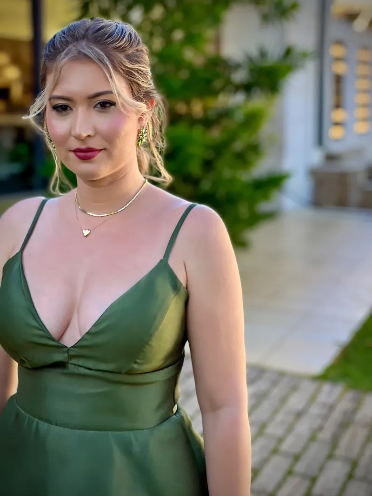
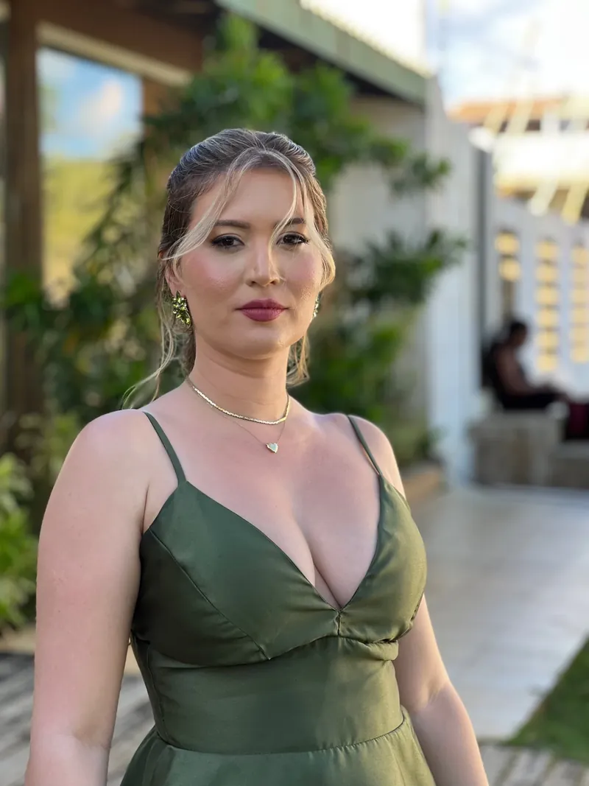
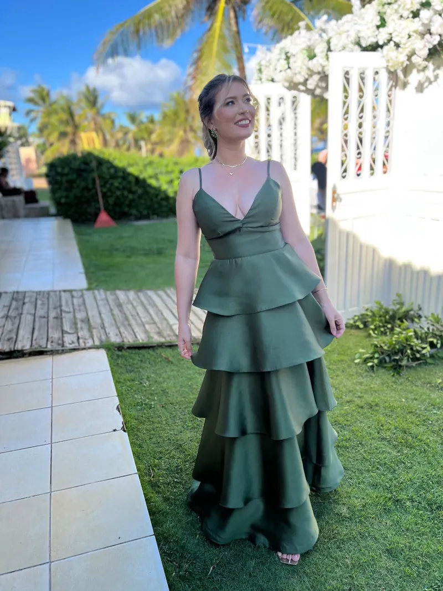

01
RESENHAS HONESTAS
Vale o preço?
Uma pergunta simples. Testes reais. Um veredito sem enrolação.
um espaço da Rafa
Produtos testados de verdade, opiniões sem roteiro pronto e aquele toque de beleza que cabe na rotina — sem complicar.
Tem dia para uma produção completa. E tem dia em que cinco minutos fazem toda a diferença.
Este espaço nasceu para falar de maquiagem com leveza: o que funciona, o que surpreende e o que realmente merece um lugar na nécessaire.
Mais do que indicar produtos, quero compartilhar escolhas que façam sentido.
Maquiagem para usar, experimentar e decidir. Sem promessas mágicas: o teste vem antes da opinião.

Uma pergunta simples. Testes reais. Um veredito sem enrolação.
Bonito na câmera é bom. Funcionar no dia a dia é melhor.

Ideias para se sentir pronta sem depender de uma hora no espelho.
O segredo não é ter mais maquiagem.
É descobrir o que combina com você.
A promessa é simples: falar sobre produtos com curiosidade, bom senso e transparência.
Cor, textura e acabamento na luz real.
Descobrir como o produto se comporta, sem inventar resultado.
Opinião pessoal, inclusive quando não vale o preço.

beleza, com calma.Quer acompanhar os próximos testes, trocar uma ideia ou falar de uma parceria? O Instagram é o melhor ponto de encontro.
@mamae.estuda.med